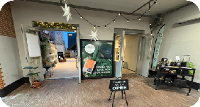

Mijn verhaal
Hallo! Welkom bij Soapy Story, mijn eigen gemaakte website over Nature Bar. Hier vertel ik mijn mening en waarom ik het aanraad om naar Nature Bar te gaan voor jouw toekomstige aankopen van doucheproducten.
Wie ben ik?Duurzaamheid
Nature Bar zet duurzaamheid op Nr.1! We zijn in Nederland al veel bezig met duurzaamheid, maar als je kijkt naar hoeveel verpakkingen er gebruikt worden bij doucheproducten valt er nog veel te winnen!
Hoe is Nature Bar duurzaam?De locatie
Bevindt zich in: De Hallen Amsterdam
Adres: Hannie Dankbaarpassage 45, 1053 RT Amsterdam
Alleen gesloten op Maandagen!